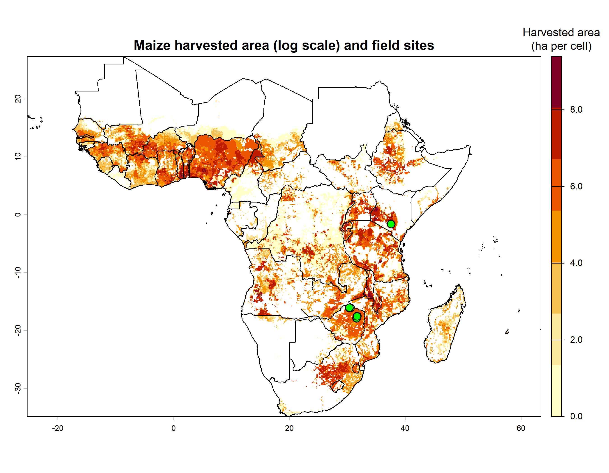
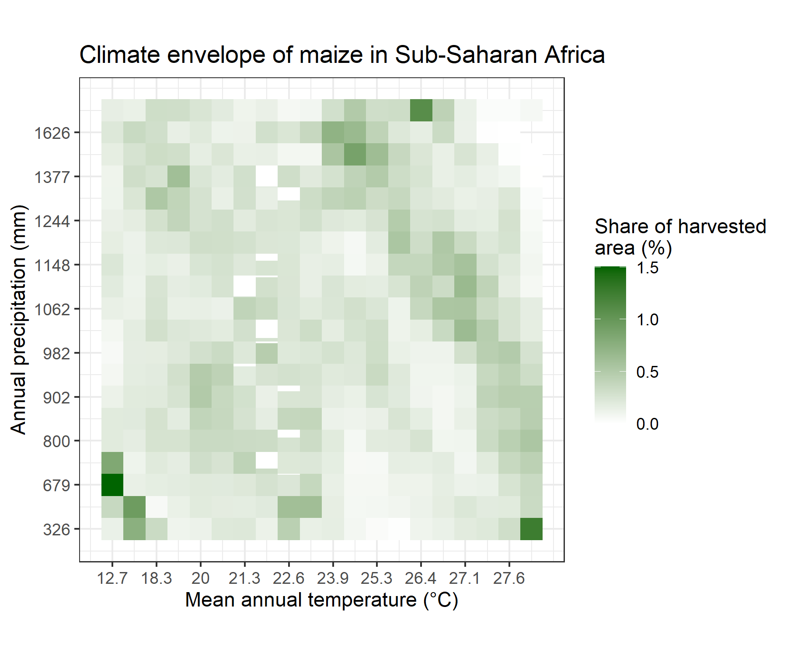
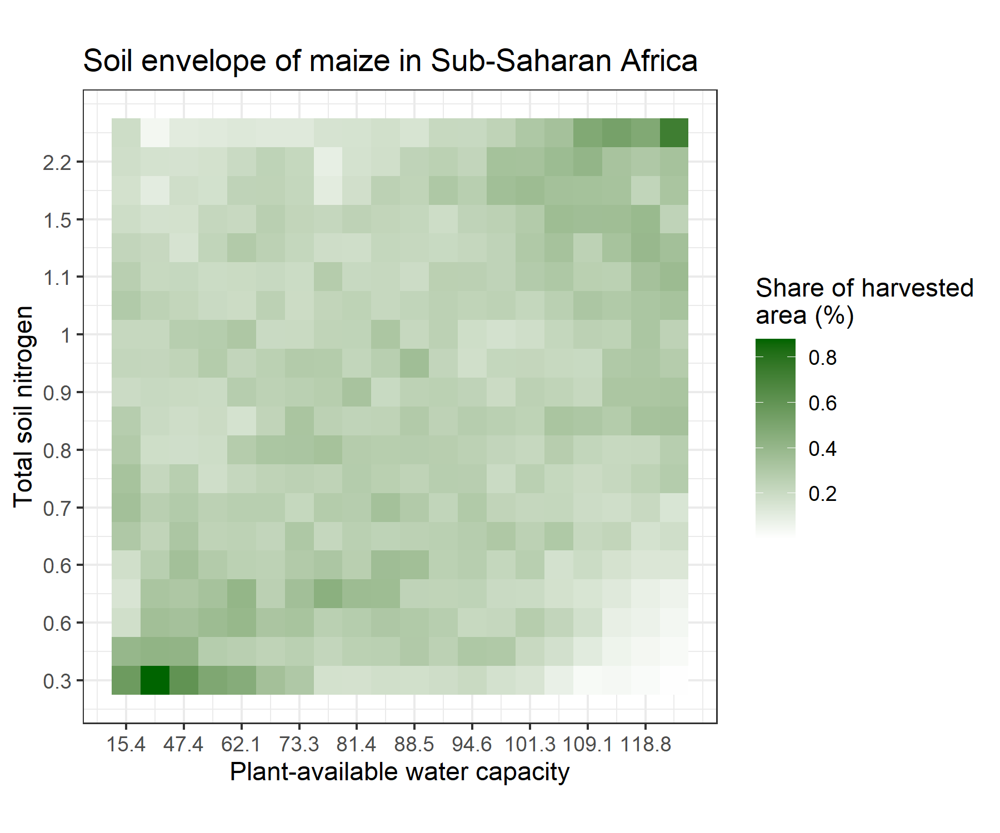
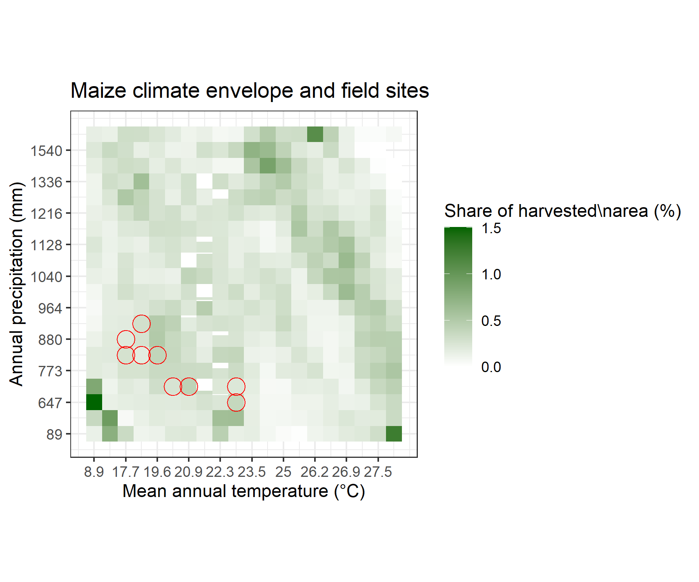
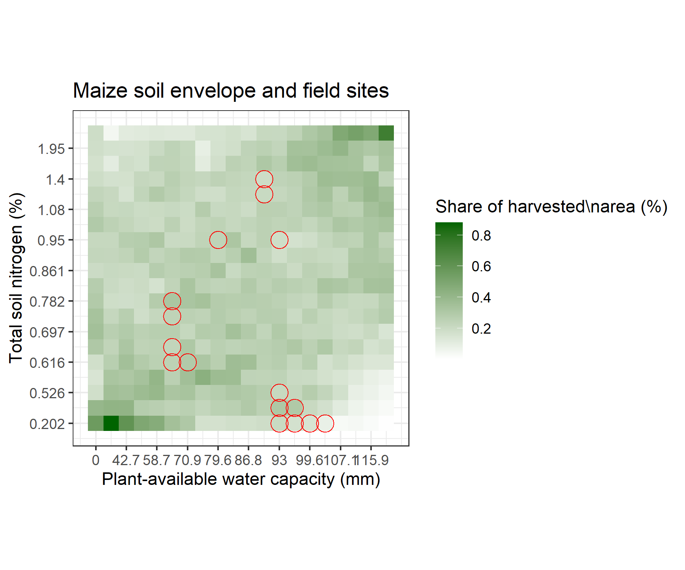

Chapter 13 Soil and climate representativeness of trials
This chapter assesses the representativeness of field trials in terms of soil and climate conditions, by estimating the share of crop production environments covered by existing trial sites.
13.1 Introduction
Field trials and demonstration plots are often implemented at a limited number of locations. Their findings are most readily extrapolated when the environmental conditions at these sites are representative of those under which the target crop is cultivated. This chapter assesses the environmental representativeness of existing trial sites across Sub-Saharan Africa (SSA).
The analysis characterises the climate and soil conditions associated with the harvested area of maize. It then locates field sites within these environmental distributions and estimates the share of maize harvested area occurring in environmental classes represented by at least one site.
The approach is inspired by Figure 3 in Ruane et al. (2017). It focuses on four variables: mean annual temperature, annual precipitation, plant-available water capacity (PAWC), and total soil nitrogen. Climate and soil coverage are assessed separately.
The resulting coverage measures are descriptive indicators of environmental representativeness. They do not assess representativeness in terms of management, farming systems, socioeconomic conditions, or environmental dimensions. Coverage also depends on the environmental variables selected and the classification scheme used, particularly the number and width of the classes.
The workflow has three main stages:
- prepare the required data, including field-site locations;
- describe the distribution of maize harvested area across climate and soil conditions;
- assess the proportion of maize harvested area occurring in environmental classes represented by field sites.
Here, the analysis is run for sub-Saharan Africa and maize.
A standalone R script containing the workflow is available here: https://github.com/FBaudron/book_standardized_workflows/blob/main/13-soil_climate_representativeness/soil_climate_representativeness.R.
We first load the necessary packages.
if (!require("terra")) install.packages("terra")
if (!require("geodata")) install.packages("geodata")
if (!require("ggplot2")) install.packages("ggplot2")
if (!require("dplyr")) install.packages("dplyr")
if (!require("tidyr")) install.packages("tidyr")
if (!require("knitr")) install.packages("knitr")
library(terra)
library(geodata)
library(ggplot2)
library(dplyr)
library(tidyr)
library(knitr)
library(dplyr)
path = "Data"13.2 Preparing the data
13.2.1 Environmental data and maize harvested area
The shapefiles and rasters required for the analysis were produced in Chapter 3. They can also be downloaded here: https://www.dropbox.com/scl/fo/hdfjnxt05c7tyf2rkgm23/AMkKt6PRDyLops16iksFk68?rlkey=ppdlzleowakrd6apn666retvw&st=ul9fo7p3&dl=0.
ssa = vect("Data/Spatial/Processed/ssa.shp")
cropmask = rast("Data/Spatial/Processed/cropmask.tif")
mean_temperature = rast("Data/Spatial/Processed/tavg.tif")
annual_precipitation = rast("Data/Spatial/Processed/prec.tif")
soil_n = rast("Data/Spatial/Processed/soil_n.tif")
pawc = rast("Data/Spatial/Processed/pawc.tif")
environment_stack = c(mean_temperature, annual_precipitation, pawc, soil_n)
names(environment_stack) = c("mean_temperature", "annual_precipitation", "pawc",
"soil_n")We use the MapSPAM 2020 harvested-area raster for maize. The MapSPAM layer represents harvested area in hectares per source cell. The raster was produced in Chapter 3, but can also be downloaded here: https://www.dropbox.com/scl/fi/r9ws9nszvk9edxg24icmz/maize_area.tif?rlkey=iopz5i3jonq00io8xxrfjhsop&st=jw51gufc&dl=0.
maize_harvested_area = rast("Data/Spatial/Processed/maize_area.tif")
global(maize_harvested_area, "sum", na.rm = TRUE) sum
maize_area 3529554313.2.2 Field-site locations
The site table can be downloaded here: https://github.com/FBaudron/book_standardized_workflows/blob/main/13-soil_climate_representativeness/sites_Zim_Kenya_Combined.csv. It contains longitude and latitude in decimal degrees (WGS84). A codeSWstation column is used to identify sites in the figures.
site_data = read.table("Data/sites_Zim_Kenya_Combined.csv", sep = ";", header = TRUE,
stringsAsFactors = FALSE)
sites = vect(site_data, geom = c("longitudeDD", "latitudeDD"), crs = "EPSG:4326")
sites_cropmask = project(sites, crs(cropmask))13.3 Distribution of maize harvested area across climate and soil conditions
13.3.1 Mapping maize harvested area and field sites
We map maize harvested area on the cropmask grid and the locations of the field sites.
# Log-transformed maize area
maize_harvested_area_log = log1p(maize_harvested_area)
plot(maize_harvested_area_log, col = rev(hcl.colors(7, "YlOrRd")), main = "Maize harvested area (log scale) and field sites",
plg = list(title = "Harvested area\n(ha per cell)"))
plot(ssa, add = T)
plot(sites_cropmask, add = T, pch = 21, bg = "green", col = "black", cex = 1.5)
13.3.2 Classifying climate and soil conditions
To compare the environmental conditions at field sites with those across the maize harvested area, each environmental variable is divided into 20 quantile-based intervals. The intervals are defined using the distribution of environmental values weighted by maize harvested area, so that each interval contains approximately 5% of the maize harvested area with valid data for the variable concerned. This approach gives greater resolution to environmental conditions that account for a large share of maize production, while avoiding the uneven representation that can arise when using equal-width intervals.
The interval boundaries are estimated from a random sample of 50,000 cells within the maize-growing area, using harvested area as weights. For total soil nitrogen, quantiles are calculated on the logarithmic scale and then back-transformed to the original scale to account for its strongly skewed distribution. The same class boundaries are subsequently used to classify both the environmental rasters and the field-site locations.
For each pair of variables, the same number of intervals is used on both axes. The heatmaps are plotted in class-index space, so that each tile has the same width and height even though the environmental variables have different units. Tile colour represents the share of maize harvested area in that combination of classes.
# Restrict the range calculations to cells with maize harvested area
maize_domain = ifel(maize_harvested_area > 0, 1, NA)
temp_maize = mask(mean_temperature, maize_domain)
rain_maize = mask(annual_precipitation, maize_domain)
pawc_maize = mask(pawc, maize_domain)
totn_maize = mask(soil_n, maize_domain)
# Number of intervals (5% increments)
n_intervals = 20
quantile_probs = seq(0, 1, length.out = n_intervals + 1)
# Sample environmental values and harvested area from the same cells
set.seed(123)
environment_sample = terra::spatSample(c(temp_maize, rain_maize, pawc_maize, totn_maize,
maize_harvested_area), size = 50000, method = "random", na.rm = TRUE, as.df = TRUE)
names(environment_sample) = c("temperature", "rainfall", "pawc", "soil_n", "harvested_area")
environment_sample = environment_sample |>
filter(harvested_area > 0, soil_n > 0)
# Calculate weighted quantiles
weighted_quantile = function(x, w, probs) {
ord = order(x)
x = x[ord]
w = w[ord]
cumulative_weight = (cumsum(w) - 0.5 * w)/sum(w)
approx(cumulative_weight, x, xout = probs, rule = 2)$y
}
temp_breaks = weighted_quantile(environment_sample$temperature, environment_sample$harvested_area,
quantile_probs)
rain_breaks = weighted_quantile(environment_sample$rainfall, environment_sample$harvested_area,
quantile_probs)
pawc_breaks = weighted_quantile(environment_sample$pawc, environment_sample$harvested_area,
quantile_probs)
# Calculate soil N quantiles on the log scale, then back-transform
totn_breaks = exp(weighted_quantile(log(environment_sample$soil_n), environment_sample$harvested_area,
quantile_probs))
# Ensure maximum values are included in the final interval
temp_breaks[length(temp_breaks)] = temp_breaks[length(temp_breaks)] + 1e-08
rain_breaks[length(rain_breaks)] = rain_breaks[length(rain_breaks)] + 1e-08
pawc_breaks[length(pawc_breaks)] = pawc_breaks[length(pawc_breaks)] + 1e-08
totn_breaks[length(totn_breaks)] = totn_breaks[length(totn_breaks)] + 1e-08
# Classify the four environmental rasters
temp_class = classify(mean_temperature, rcl = cbind(head(temp_breaks, -1), tail(temp_breaks,
-1), seq_len(n_intervals)), right = FALSE)
rain_class = classify(annual_precipitation, rcl = cbind(head(rain_breaks, -1), tail(rain_breaks,
-1), seq_len(n_intervals)), right = FALSE)
pawc_class = classify(pawc, rcl = cbind(head(pawc_breaks, -1), tail(pawc_breaks,
-1), seq_len(n_intervals)), right = FALSE)
totn_class = classify(soil_n, rcl = cbind(head(totn_breaks, -1), tail(totn_breaks,
-1), seq_len(n_intervals)), right = FALSE)13.3.3 Distribution across climate conditions
We plot the climate envelope.
# Number of classes for each variable
n_temp <- length(temp_breaks) - 1
n_rain <- length(rain_breaks) - 1
# Encode each temperature-rainfall class combination as a unique zone
climate_zone <- (temp_class - 1) * n_rain + rain_class
# Exclude cells without valid classes or maize harvested area
climate_zone <- terra::mask(climate_zone, maize_harvested_area)
# Calculate maize harvested area in each climate zone
climate_area <- terra::zonal(maize_harvested_area, climate_zone, fun = "sum", na.rm = TRUE)
# Convert to data frame and assign explicit column names
climate_area <- as.data.frame(climate_area)
names(climate_area) <- c("zone", "harvested_area_ha")
# Recover temperature and rainfall class indices
climate_area <- climate_area |>
dplyr::mutate(temp_class = floor((zone - 1)/n_rain) + 1, rain_class = ((zone -
1)%%n_rain) + 1, share_area = harvested_area_ha/sum(harvested_area_ha) *
100)
# Plot in class-index space to obtain square tiles
axis_breaks <- seq(1, n_temp, by = 2)
temp_labels <- (head(temp_breaks, -1) + tail(temp_breaks, -1))/2
rain_labels <- (head(rain_breaks, -1) + tail(rain_breaks, -1))/2
ggplot(climate_area, aes(x = temp_class, y = rain_class, fill = share_area)) + geom_tile(width = 1,
height = 1) + scale_x_continuous(breaks = axis_breaks, labels = round(temp_labels[axis_breaks],
1), limits = c(0.5, n_temp + 0.5)) + scale_y_continuous(breaks = axis_breaks,
labels = round(rain_labels[axis_breaks], 0), limits = c(0.5, n_rain + 0.5)) +
scale_fill_gradient(low = "white", high = "darkgreen", name = "Share of harvested\narea (%)") +
coord_fixed() + labs(x = "Mean annual temperature (°C)", y = "Annual precipitation (mm)",
title = "Climate envelope of maize in Sub-Saharan Africa") + theme_bw()
13.3.4 Distribution across soil conditions
We plot the soil envelope.
# Number of classes for each variable
n_pawc <- length(pawc_breaks) - 1
n_totn <- length(totn_breaks) - 1
# Encode each PAWC-total nitrogen class combination as a unique zone
soil_zone <- (pawc_class - 1) * n_totn + totn_class
# Exclude cells without valid classes or maize harvested area
soil_zone <- terra::mask(soil_zone, maize_harvested_area)
# Calculate maize harvested area in each soil zone
soil_area <- terra::zonal(maize_harvested_area, soil_zone, fun = "sum", na.rm = TRUE)
# Convert to data frame and assign explicit column names
soil_area <- as.data.frame(soil_area)
names(soil_area) <- c("zone", "harvested_area_ha")
# Recover PAWC and total nitrogen class indices
soil_area <- soil_area |>
dplyr::mutate(pawc_class = floor((zone - 1)/n_totn) + 1, totn_class = ((zone -
1)%%n_totn) + 1, share_area = harvested_area_ha/sum(harvested_area_ha) *
100)
# Plot in class-index space to obtain square tiles
axis_breaks <- seq(1, n_pawc, by = 2)
pawc_labels <- (head(pawc_breaks, -1) + tail(pawc_breaks, -1))/2
totn_labels <- (head(totn_breaks, -1) + tail(totn_breaks, -1))/2
ggplot(soil_area, aes(x = pawc_class, y = totn_class, fill = share_area)) + geom_tile(width = 1,
height = 1) + scale_x_continuous(breaks = axis_breaks, labels = round(pawc_labels[axis_breaks],
1), limits = c(0.5, n_pawc + 0.5)) + scale_y_continuous(breaks = axis_breaks,
labels = round(totn_labels[axis_breaks], 1), limits = c(0.5, n_totn + 0.5)) +
scale_fill_gradient(low = "white", high = "darkgreen", name = "Share of harvested\narea (%)") +
coord_fixed() + labs(x = "Plant-available water capacity", y = "Total soil nitrogen",
title = "Soil envelope of maize in Sub-Saharan Africa") + theme_bw()
13.4 Representativity of the environmental classes covered by field sites
13.4.1 Characterising environmental conditions at field sites
Environmental values are extracted at the site coordinates from the same aligned rasters used to characterise maize harvested area. Sites with missing extracted values are excluded from the coverage calculations and can be identified in the resulting table.
site_values = terra::extract(environment_stack, sites_cropmask) |>
as.data.frame() |>
bind_cols(site_data)
site_values = site_values |>
mutate(temp_class = cut(mean_temperature, temp_breaks, right = FALSE, include.lowest = TRUE,
labels = FALSE), rain_class = cut(annual_precipitation, rain_breaks, right = FALSE,
include.lowest = TRUE, labels = FALSE), pawc_class = cut(pawc, pawc_breaks,
right = FALSE, include.lowest = TRUE, labels = FALSE), totn_class = cut(soil_n,
totn_breaks, right = FALSE, include.lowest = TRUE, labels = FALSE), climate_zone = interaction(temp_class,
rain_class, drop = TRUE), soil_zone = interaction(pawc_class, totn_class,
drop = TRUE))13.4.2 Mapping field sites within the environmental envelopes
We overlay field sites on the environmental envelopes.
ggplot(climate_area, aes(x = temp_class, y = rain_class, fill = share_area)) + geom_tile(width = 1,
height = 1) + geom_point(data = site_values, aes(x = temp_class, y = rain_class),
inherit.aes = FALSE, shape = 1, colour = "red", size = 5) + scale_x_continuous(breaks = axis_breaks,
labels = round(temp_breaks[axis_breaks], 1), limits = c(0.5, n_intervals + 0.5)) +
scale_y_continuous(breaks = axis_breaks, labels = round(rain_breaks[axis_breaks],
0), limits = c(0.5, n_intervals + 0.5)) + scale_fill_gradient(low = "white",
high = "darkgreen", name = "Share of harvested\\narea (%)") + coord_fixed() +
labs(x = "Mean annual temperature (°C)", y = "Annual precipitation (mm)", title = "Maize climate envelope and field sites") +
theme_bw()
ggplot(soil_area, aes(x = pawc_class, y = totn_class, fill = share_area)) + geom_tile(width = 1,
height = 1) + geom_point(data = site_values, aes(x = pawc_class, y = totn_class),
inherit.aes = FALSE, shape = 1, colour = "red", size = 5) + scale_x_continuous(breaks = axis_breaks,
labels = round(pawc_breaks[axis_breaks], 1), limits = c(0.5, n_intervals + 0.5)) +
scale_y_continuous(breaks = axis_breaks, labels = signif(totn_breaks[axis_breaks],
3), limits = c(0.5, n_intervals + 0.5)) + scale_fill_gradient(low = "white",
high = "darkgreen", name = "Share of harvested\\narea (%)") + coord_fixed() +
labs(x = "Plant-available water capacity (mm)", y = "Total soil nitrogen (%)",
title = "Maize soil envelope and field sites") + theme_bw()
13.4.3 Calculating environmental coverage
For each dimension (climate and soil), coverage is calculated as the proportion of maize harvested area occurring in environmental class combinations represented by at least one field site. It is obtained by summing the harvested area in these class combinations and dividing it by the total maize harvested area with valid data for the corresponding environmental variables.
This is a class-based measure: a site represents the entire environmental class combination in which it falls. It does not imply that all locations within that class are identical to the site. Climate and soil coverage are calculated separately; the percentages therefore do not indicate the proportion of maize area represented simultaneously across all four variables.
Coverage depends on the environmental variables and class boundaries used. In particular, changing the number of intervals or the classification method can change the resulting percentages.
# Identify class combinations represented by at least one site
climate_site_classes = site_values |>
filter(!is.na(temp_class), !is.na(rain_class)) |>
distinct(temp_class, rain_class)
soil_site_classes = site_values |>
filter(!is.na(pawc_class), !is.na(totn_class)) |>
distinct(pawc_class, totn_class)
# Total harvested area represented in each environmental envelope
climate_total_area = sum(climate_area$harvested_area_ha, na.rm = TRUE)
soil_total_area = sum(soil_area$harvested_area_ha, na.rm = TRUE)
# Harvested area in class combinations containing at least one site
climate_covered_area = climate_area |>
inner_join(climate_site_classes, by = c("temp_class", "rain_class")) |>
summarise(area = sum(harvested_area_ha, na.rm = TRUE)) |>
pull(area)
soil_covered_area = soil_area |>
inner_join(soil_site_classes, by = c("pawc_class", "totn_class")) |>
summarise(area = sum(harvested_area_ha, na.rm = TRUE)) |>
pull(area)
coverage_summary = tibble(dimension = c("Climate", "Soil"), total_harvested_area_ha = c(climate_total_area,
soil_total_area), harvested_area_in_site_classes_ha = c(climate_covered_area,
soil_covered_area), coverage_percent = 100 * c(climate_covered_area/climate_total_area,
soil_covered_area/soil_total_area))
# Transpose summary for a more readable layout
coverage_summary_t = data.frame(Indicator = c("Total harvested area (ha)", "Harvested area in site classes (ha)",
"Coverage (%)"), Climate = as.numeric(t(coverage_summary[1, -1])), Soil = as.numeric(t(coverage_summary[2,
-1])))
coverage_summary_t %>%
knitr::kable(digits = 2, booktabs = TRUE, caption = "Harvested area coverage by environmental dimension")| Indicator | Climate | Soil |
|---|---|---|
| Total harvested area (ha) | 35295543.2 | 35030152.44 |
| Harvested area in site classes (ha) | 918443.3 | 1246430.80 |
| Coverage (%) | 2.6 | 3.56 |